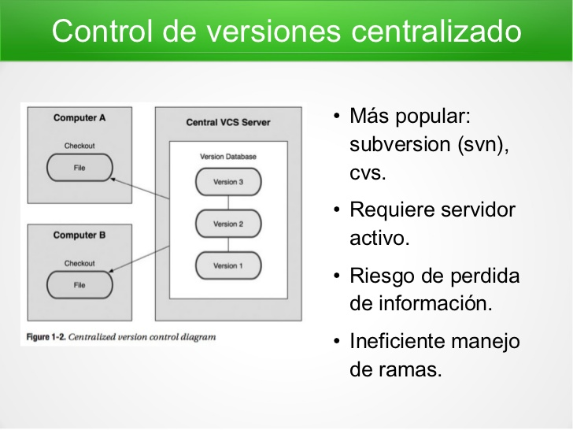

Un método de control de versiones usado por muchas personas es copiar los archivos a otro directorio (quizás indicando la fecha y hora en que lo hicieron, si son ingeniosos).

Centralizados
El siguiente gran problema con el que se encuentran las personas es que necesitan colaborar con desarrolladores en otros sistemas. Los sistemas de Control de Versiones Centralizados (CVCS por sus siglas en inglés) fueron desarrollados para solucionar este problema.
Distribuidos
Tiene una fuerza física brutal, Drax tiene una vendetta personal contra Ronan, que mató a su familia
Un control de versiones o VCS (del inglés Version Control System) es un sistema que registra los cambios realizados en un archivo o conjunto de archivos a lo largo del tiempo, de modo que puedas recuperar versiones específicas más adelante.
Características
Un sistema de control de versiones debe proporcionar:
Mecanismo de almacenamiento de los elementos que deba gestionar.
Posibilidad de realizar cambios sobre los elementos almacenados.
Registro histórico de las acciones realizadas con cada elemento o conjunto de elementos.
Control de Versiones
GIT, "Git en pocas palabras es un controlador de versiones distribuido."
Un repositorio remoto no es más que una copia de los archivos, carpetas, fotos, etc. qué se encuentran bajo la supervisión de git, y están respaldados en un sitio externo a nuestra computadora (Internet, o una red local domestica/oficina, etc.).
Esto nos permite poder colaborar en un proyecto con otros usuarios de manera distribuida; cabe destacar que un repositorio remoto se pueden tener permisos de lectura y escritura o solo lectura.